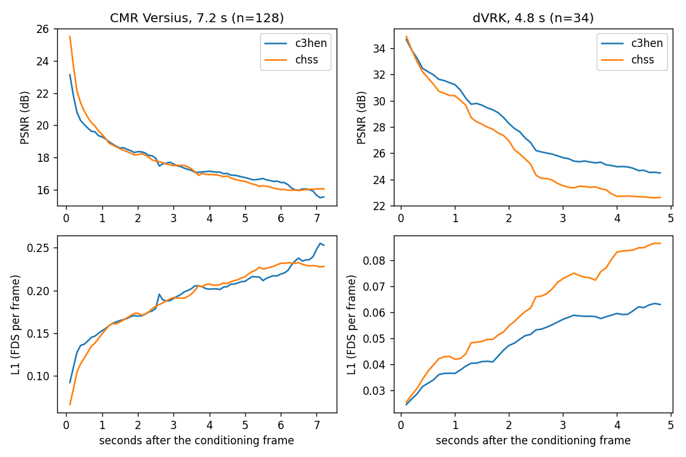
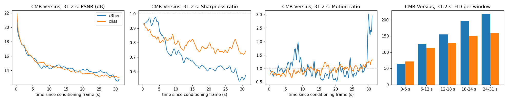

Cosmos3-H-Embodied-Nano：同一序列里的世界动态与策略
来源与时间
- 原卡明确GitHub/HF均 2026-10-20：HF Model Card。
- 官方代码页、评估文档。
- Cosmos3基础 Tech Report（PDF，仅链接）。不是专项模型的独立验证报告。
结构与三种条件分布
Cosmos3-Nano约16B MoT把Qwen3-VL-8B Reasoner与扩散Generator耦合，共享视频、动作和文字的多模态序列。后训练更新约7B生成专家、timestep与动作/视频投影，Reasoner冻结。由embodiment ID选择动作映射，不是一个动作归一化表通吃所有机器人。
| 模式 | 作为干净条件的输入 | 去噪目标 | 训练比例 |
|---|---|---|---|
| Forward dynamics | 首帧与动作 | 未来视频 | 0.4 |
| Inverse dynamics | 已观测完整视频 | 动作 | 0.2 |
| Policy | 首帧、任务文字、过去动作 | 未来动作与视频 | 0.4 |
训练50000iterations；每片2.4秒、25帧含首帧、24动作，10Hz，最多16步真实历史动作。正向预测看到未来动作、policy没有，因此前者更好不能直接解释成策略能力。这里讨论学习系统，不提供实际手术控制建议。
数据覆盖的真实边界
Open-H混合15families、55roots，约95%训练、5%留出。仅11families公开，四个family与部分root/文本/视频没有公开；只下载公开集合无法保证复原完整训练。公开评估的三模式结果覆盖有留出episode的10个family，每个64clips，共640clips，不是全部15个family。
视频使用256p档，具体宽高按比例选择；动作在各family坐标与统计量下归一化。MSE是归一化动作空间误差，不能直接转成毫米、实机成功率或临床安全。
三模式结果：mean与best-of-4必须分开
| 指标 | 全640clips | dVRK九families | CMR Versius |
|---|---|---|---|
| Forward video PSNR↑ | 26.1 | 26.9 | 18.6 |
| Inverse action MSE↓ | 0.009 | 0.008 | 0.019 |
| Policy MSE mean / best4↓ | 0.052 / 0.033 | 0.046 / 0.031 | 0.101 / 0.056 |
| Policy PSNR mean / best4↑ | 23.0 / 23.9 | 23.7 / 24.6 | 16.7 / 17.8 |
| Family均值轨迹MSE↓ | 0.075 | 0.073 | 0.091 |
总体policy mean比均值轨迹低，但 CMR mean0.101反而差于0.091基线；best4的0.056需要额外采样与选择，不能冒充单次表现。Inverse任务能看完整真实视频，不能用它的0.009替代policy误差。

对上一代和长程的发现
共同留出episode、同输入动作、各自发布推理设置、176行评分下，dVRK短窗PSNR26.53对24.52、dynamic PSNR21.08对19.33；CMR7.2秒FID44.3对55.4，但FVD274差于225。单帧外观更像不代表运动更对。
31.2秒CMR长rollout在后段退化更明显：24–31秒FID218对159、FVD1765对961。它主要训练2.4秒片段，这使一步与长程分布不一致。评价不能只截最开始六秒。

静态组织占多数像素，PSNR奖励复制背景；dynamic PSNR只看真实视频变化最大的20%像素。GATC依赖tool mask，TCD混合定位误差与分割器漏检；FID/FVD依赖样本数。因此需同rollouts、同评分分辨率和相同窗口比较，不跨表挑最好数字。
对 Agent Training 的启发
研究验收应固定数据revision与episode拆分，记录真实历史动作、预测动作、选择器是否用真值、所有seed和失败分母。当前材料支持模拟与算法研究，不构成真实设备或临床使用许可/安全认证。
📊 中文 Poster：cosmos3_h_embodied_nano_poster_zh.html